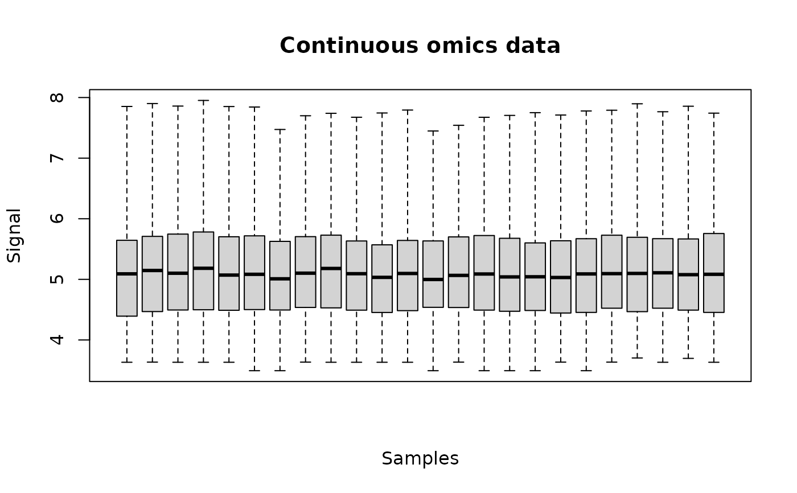
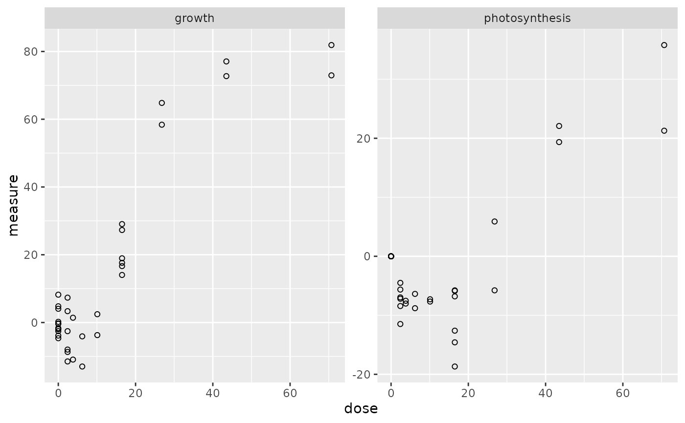
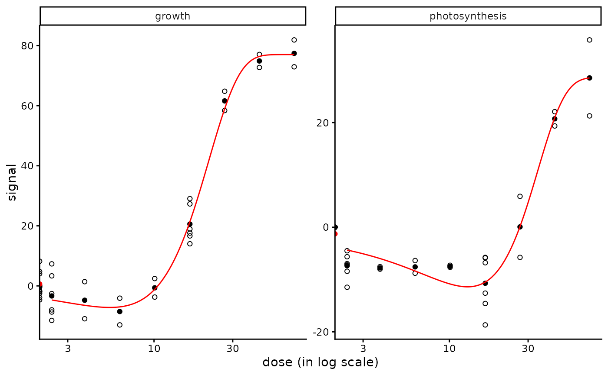
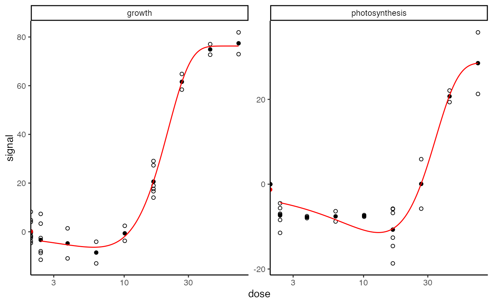
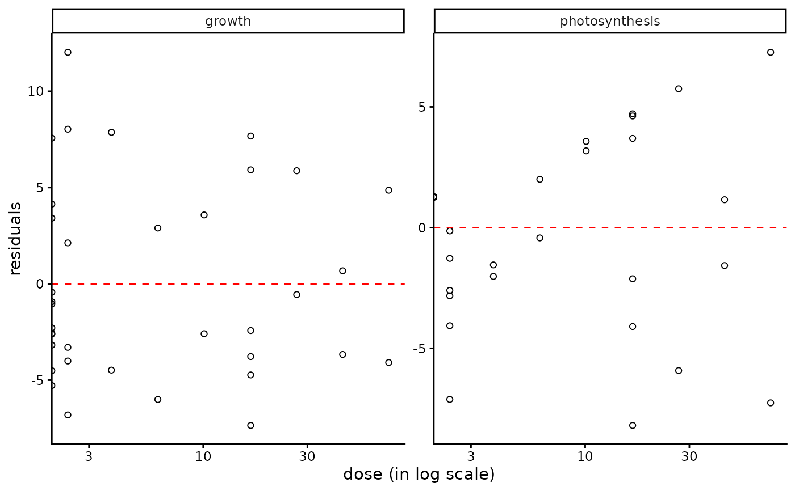

Concentration-response effect of triclosan in Scenedesmus vacuolatus
Scenedesmus.RdMetabolomic and apical data sets for the effect of triclosan in the chlorophyte Scenedesmus vacuolatus.
Format
Scenedesmus_metab contains one row per metabolite, with the first column corresponding to the identifier of each metabolite, and the other columns giving the log10 tranformed area under the curve for each
replicate at each concentration.
In the first line, after the name for the identifier column, we have the tested concentrations for each corresponding replicate.
Scenedesmus_apical contains one row per apical endpoint, with the first column corresponding to the identifier of each endpoint, and the other columns giving the measured
value of this each endpoint for each
replicate at each concentration.
In the first line, after the name for the identifier column, we have the tested concentrations for each corresponding replicate.
Source
Larras, F., Billoir, E., Scholz, S., Tarkka, M., Wubet, T., Delignette-Muller, M. L., & Schmitt-Jansen, M. (2020). A multi-omics concentration-response framework uncovers novel understanding of triclosan effects in the chlorophyte Scenedesmus vacuolatus. Journal of Hazardous Materials, 122727.
Examples
# (1.1) load of metabolomics data
#
data(Scenedesmus_metab)
head(Scenedesmus_metab)
#> V1 V2 V3 V4 V5 V6 V7 V8
#> 1 metab.code 0.000000 0.000000 0.000000 0.000000 0.000000 0.000000 7.760000
#> 2 NAP_1 4.338845 4.727077 4.664407 4.741994 4.338845 4.667462 4.338845
#> 3 NAP_2 5.923194 5.997305 5.897229 6.092802 5.966068 5.733371 5.548711
#> 4 NAP_3 4.780252 4.890248 5.103817 5.060089 5.037458 4.829921 4.948354
#> 5 NAP_4 4.027370 4.457973 4.027370 4.027370 4.350887 4.027370 4.027370
#> 6 NAP_5 5.269317 4.660272 5.407287 5.282763 4.660272 4.660272 5.306268
#> V9 V10 V11 V12 V13 V14 V15 V16
#> 1 4.780000 2.920000 1.790000 1.100000 0.690000 7.760000 7.760000 4.780000
#> 2 4.639875 4.684765 4.338845 4.338845 4.855040 4.338845 4.927042 4.338845
#> 3 5.478389 5.708228 5.585534 5.832640 5.853180 5.425401 5.590360 5.478412
#> 4 4.863668 4.923078 4.922019 4.870656 5.071359 4.869461 5.115907 5.135603
#> 5 4.027370 4.027370 4.027370 4.027370 4.027370 4.027370 4.027370 4.027370
#> 6 4.660272 5.342616 5.295892 4.660272 5.319847 5.104808 4.660272 5.219089
#> V17 V18 V19 V20 V21 V22 V23 V24
#> 1 4.780000 2.920000 2.920000 1.790000 1.790000 1.100000 1.100000 0.690000
#> 2 4.338845 4.338845 4.733983 4.338845 4.338845 4.338845 5.078072 4.338845
#> 3 5.460895 5.485156 5.448148 5.582259 5.700495 5.976869 5.435696 5.875684
#> 4 5.002352 5.325395 4.479222 4.979134 5.164020 5.067967 5.279681 5.166167
#> 5 4.027370 4.027370 4.027370 4.521230 4.328400 4.422097 4.689859 4.492537
#> 6 4.660272 4.660272 4.961302 4.660272 4.660272 4.660272 5.455795 5.462184
#> V25
#> 1 0.690000
#> 2 4.703429
#> 3 5.656397
#> 4 5.018734
#> 5 4.027370
#> 6 4.660272
str(Scenedesmus_metab)
#> 'data.frame': 225 obs. of 25 variables:
#> $ V1 : chr "metab.code" "NAP_1" "NAP_2" "NAP_3" ...
#> $ V2 : num 0 4.34 5.92 4.78 4.03 ...
#> $ V3 : num 0 4.73 6 4.89 4.46 ...
#> $ V4 : num 0 4.66 5.9 5.1 4.03 ...
#> $ V5 : num 0 4.74 6.09 5.06 4.03 ...
#> $ V6 : num 0 4.34 5.97 5.04 4.35 ...
#> $ V7 : num 0 4.67 5.73 4.83 4.03 ...
#> $ V8 : num 7.76 4.34 5.55 4.95 4.03 ...
#> $ V9 : num 4.78 4.64 5.48 4.86 4.03 ...
#> $ V10: num 2.92 4.68 5.71 4.92 4.03 ...
#> $ V11: num 1.79 4.34 5.59 4.92 4.03 ...
#> $ V12: num 1.1 4.34 5.83 4.87 4.03 ...
#> $ V13: num 0.69 4.86 5.85 5.07 4.03 ...
#> $ V14: num 7.76 4.34 5.43 4.87 4.03 ...
#> $ V15: num 7.76 4.93 5.59 5.12 4.03 ...
#> $ V16: num 4.78 4.34 5.48 5.14 4.03 ...
#> $ V17: num 4.78 4.34 5.46 5 4.03 ...
#> $ V18: num 2.92 4.34 5.49 5.33 4.03 ...
#> $ V19: num 2.92 4.73 5.45 4.48 4.03 ...
#> $ V20: num 1.79 4.34 5.58 4.98 4.52 ...
#> $ V21: num 1.79 4.34 5.7 5.16 4.33 ...
#> $ V22: num 1.1 4.34 5.98 5.07 4.42 ...
#> $ V23: num 1.1 5.08 5.44 5.28 4.69 ...
#> $ V24: num 0.69 4.34 5.88 5.17 4.49 ...
#> $ V25: num 0.69 4.7 5.66 5.02 4.03 ...
# \donttest{
# (1.2) import and check of metabolomics data
#
(o_metab <- continuousomicdata(Scenedesmus_metab))
#> Warning:
#> We recommend you to check that your omic data were correctly pretreated
#> before importation. In particular data (e.g. metabolomic signal) should
#> have been log-transformed, without replacing 0 values by NA values
#> (consider using the half minimum method instead for example).
#> Elements of the experimental design in order to check the coding of the data:
#> Tested doses and number of replicates for each dose:
#>
#> 0 0.69 1.1 1.79 2.92 4.78 7.76
#> 6 3 3 3 3 3 3
#> Number of items: 224
#> Identifiers of the first 20 items:
#>
#> [1] "NAP_1" "NAP_2" "NAP_3" "NAP_4" "NAP_5" "NAP_6" "NAP_7" "NAP_8"
#> [9] "NAP_9" "NAP_11" "NAP_13" "NAP_14" "NAP_15" "NAP_16" "NAP_17" "NAP_18"
#> [17] "NAP_19" "NAP_20" "NAP_21" "NAP_22"
plot(o_metab)

# (2.1) load of apical data
#
data(Scenedesmus_apical)
head(Scenedesmus_apical)
#> V1 V2 V3 V4 V5 V6 V7 V8
#> 1 endpoint 0.10000 0.10000 0.10000 0.10000 0.10000 0.10000 0.1000
#> 2 growth 4.05405 -3.86402 -0.40118 0.21115 4.78474 -0.28645 -1.9627
#> 3 photosynthesis 0.00000 0.00000 0.00000 0.00000 0.00000 0.00000 0.0000
#> V9 V10 V11 V12 V13 V14 V15 V16
#> 1 0.10000 0.10000 0.10000 0.10000 0.10000 2.40000 2.40000 2.40000
#> 2 -2.53559 8.21172 -4.63598 -1.64234 -1.93339 -7.98142 7.33857 3.34705
#> 3 0.00000 0.00000 0.00000 0.00000 0.00000 -7.18853 -4.50187 -8.42766
#> V17 V18 V19 V20 V21 V22 V23 V24
#> 1 2.40000 2.40000 2.40000 3.80000 3.80000 6.20000 6.20000 10.10000
#> 2 -2.55707 -8.68987 -11.48974 1.41102 -10.93750 -4.08453 -12.98564 2.45072
#> 3 -5.63618 -11.47670 -6.96251 -7.53671 -8.01109 -6.37088 -8.79645 -7.67328
#> V25 V26 V27 V28 V29 V30 V31 V32
#> 1 10.10000 16.50000 16.50000 16.50000 16.50000 16.50000 16.50000 26.80000
#> 2 -3.71622 27.30152 29.05854 17.60842 14.03268 18.95971 16.65211 64.81147
#> 3 -7.28024 -6.78936 -12.60403 -5.77177 -5.86055 -18.67683 -14.58052 -5.76963
#> V33 V34 V35 V36 V37
#> 1 26.8000 43.50000 43.50000 70.70000 70.70000
#> 2 58.3826 77.06083 72.71959 72.94341 81.89225
#> 3 5.8997 22.08560 19.35689 21.28191 35.79860
str(Scenedesmus_apical)
#> 'data.frame': 3 obs. of 37 variables:
#> $ V1 : chr "endpoint" "growth" "photosynthesis"
#> $ V2 : num 0.1 4.05 0
#> $ V3 : num 0.1 -3.86 0
#> $ V4 : num 0.1 -0.401 0
#> $ V5 : num 0.1 0.211 0
#> $ V6 : num 0.1 4.78 0
#> $ V7 : num 0.1 -0.286 0
#> $ V8 : num 0.1 -1.96 0
#> $ V9 : num 0.1 -2.54 0
#> $ V10: num 0.1 8.21 0
#> $ V11: num 0.1 -4.64 0
#> $ V12: num 0.1 -1.64 0
#> $ V13: num 0.1 -1.93 0
#> $ V14: num 2.4 -7.98 -7.19
#> $ V15: num 2.4 7.34 -4.5
#> $ V16: num 2.4 3.35 -8.43
#> $ V17: num 2.4 -2.56 -5.64
#> $ V18: num 2.4 -8.69 -11.48
#> $ V19: num 2.4 -11.49 -6.96
#> $ V20: num 3.8 1.41 -7.54
#> $ V21: num 3.8 -10.94 -8.01
#> $ V22: num 6.2 -4.08 -6.37
#> $ V23: num 6.2 -13 -8.8
#> $ V24: num 10.1 2.45 -7.67
#> $ V25: num 10.1 -3.72 -7.28
#> $ V26: num 16.5 27.3 -6.79
#> $ V27: num 16.5 29.1 -12.6
#> $ V28: num 16.5 17.61 -5.77
#> $ V29: num 16.5 14.03 -5.86
#> $ V30: num 16.5 19 -18.7
#> $ V31: num 16.5 16.7 -14.6
#> $ V32: num 26.8 64.81 -5.77
#> $ V33: num 26.8 58.4 5.9
#> $ V34: num 43.5 77.1 22.1
#> $ V35: num 43.5 72.7 19.4
#> $ V36: num 70.7 72.9 21.3
#> $ V37: num 70.7 81.9 35.8
# (2.2) import and check of apical data
#
(o_apical <- continuousanchoringdata(Scenedesmus_apical, backgrounddose = 0.1))
#> Warning:
#> We recommend you to check that your anchoring data are continuous and
#> defined in a scale that enable the use of a normal error model (needed
#> at each step of the workflow including the selection step).
#> Elements of the experimental design in order to check the coding of the data:
#> Tested doses and number of replicates for each dose:
#>
#> 0 2.4 3.8 6.2 10.1 16.5 26.8 43.5 70.7
#> 12 6 2 2 2 6 2 2 2
#> Number of endpoints: 2
#> Names of the endpoints:
#> [1] "growth" "photosynthesis"
# It is here necessary to define the background dose as there is no dose at 0 in the data
# The BMD cannot be computed without defining the background level
plot(o_apical)

# (2.3) selection of responsive endpoints on apical data
#
(s_apical <- itemselect(o_apical, select.method = "quadratic", FDR = 0.05))
#> Number of selected items using a quadratic trend test with an FDR of 0.05: 2
#> Identifiers of the responsive items:
#> [1] "growth" "photosynthesis"
# (2.4) fit of dose-response models on apical data
#
(f_apical <- drcfit(s_apical, progressbar = TRUE))
#> The fitting may be long if the number of selected items is high.
#>
|
| | 0%
|
|=================================== | 50%
|
|======================================================================| 100%
#> Results of the fitting using the AICc to select the best fit model
#> Distribution of the chosen models among the 2 fitted dose-response curves:
#>
#> Hill linear exponential Gauss-probit
#> 0 0 0 2
#> log-Gauss-probit
#> 0
#> Distribution of the trends (curve shapes) among the 2 fitted dose-response curves:
#>
#> U
#> 2
f_apical$fitres
#> id irow adjpvalue model nbpar b c
#> 1 growth 1 4.120696e-17 Gauss-probit 4 12.20929 77.03040
#> 2 photosynthesis 2 2.669437e-13 Gauss-probit 4 16.87413 28.65168
#> d e f SDres typology trend y0 yatdosemax
#> 1 77.03040 5.38810 -84.19789 5.236305 GP.U U 0.644969 77.03035
#> 2 28.65168 12.88431 -40.04502 3.788006 GP.U U -1.267411 28.53860
#> yrange maxychange xextrem yextrem
#> 1 84.19784 76.38538 5.38810 -7.167487
#> 2 39.93195 29.80601 12.88431 -11.393343
plot(f_apical)

plot(f_apical, dose_log_trans = TRUE)
#> Warning: Transformation introduced infinite values in continuous x-axis
#> Warning: Transformation introduced infinite values in continuous x-axis
#> Warning: Transformation introduced infinite values in continuous x-axis

plot(f_apical, plot.type = "dose_residuals")

# (2.5) Benchmark dose calculation on apical data
#
r_apical <- bmdcalc(f_apical, z = 1)
r_apical$res
#> id irow adjpvalue model nbpar b c
#> 1 growth 1 4.120696e-17 Gauss-probit 4 12.20929 77.03040
#> 2 photosynthesis 2 2.669437e-13 Gauss-probit 4 16.87413 28.65168
#> d e f SDres typology trend y0 yatdosemax
#> 1 77.03040 5.38810 -84.19789 5.236305 GP.U U 0.644969 77.03035
#> 2 28.65168 12.88431 -40.04502 3.788006 GP.U U -1.267411 28.53860
#> yrange maxychange xextrem yextrem BMD.zSD BMR.zSD BMD.xfold
#> 1 84.19784 76.38538 5.38810 -7.167487 2.344346 -4.591336 0.02400000
#> 2 39.93195 29.80601 12.88431 -11.393343 2.978888 -5.055417 0.09375678
#> BMR.xfold
#> 1 0.5804721
#> 2 -1.3941523
# }